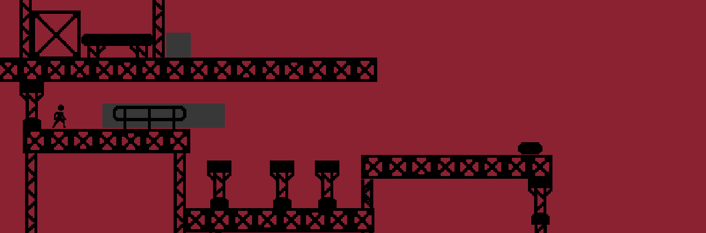

Platforming Platforms
Platforming Platforms is a game made for the GMTK 2023 Game Jam. The theme of this jam is "Reversed Roles". Platforming Platforms is a game where you help the poor human get home from his shift by helping him navigate the scaffolding. You can click on the gray platforms to platform around and create a path for the human. Once you are satisfied with your path, press enter to tell the human to run towards the exit. If you need to retry the level, press "R".
This game was made in a few hours (the jam had 48 hours but I forgot the date so I had more like 4 hours), so the character controller and most of the assets are open source. While I would have perfered to do all of it myself, I wanted to focus more on designing levels.